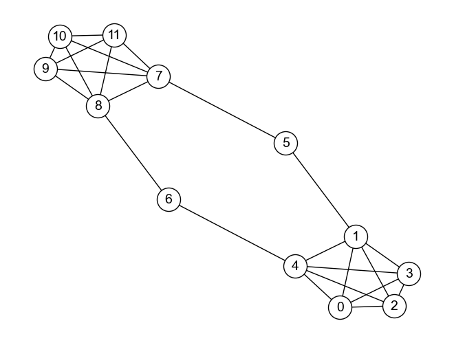

グラフ#
扱うデータセット#
人工的なデータ（データに意味はない，定義確認用の小さいグラフ）
空手クラブ（小規模な社会ネットワーク; 無向グラフ）
名古屋市地下鉄（小規模なネットワーク; 無向グラフ）
プログラミング言語ネットワーク（中規模のネットワーク; 有向グラフ-> 無向グラフにする？）
講義計画#
グラフとは & 経路
グラフ構造の性質
ノードの中心性
コミュニティ発見
ウェブグラフ
グラフ埋め込み
総合演習 - 社会ネットワーク分析（テキスト解析 or Wikipedia歴史人物）
import numpy as np
import networkx as nx
%matplotlib inline
DRAW_CONFIG = {
'node_color': 'white',
'edgecolors': 'black', # line color of nodes
'with_labels': True,
'node_size': 600,
'font_size': 14,
'font_family': 'Arial',
}
グラフ埋め込み#
G = nx.barbell_graph(m1=5, m2=2)
G.add_edge(5, 7)
G.add_edge(4, 6)
G.remove_edge(5, 6)
G.remove_edge(6, 7)
G.add_edge(6, 8)
G.remove_edge(5, 4)
G.add_edge(5, 1)
pos = nx.spring_layout(G, seed=123)
nx.draw(G, pos, **DRAW_CONFIG)

隣接行列#
A = nx.adjacency_matrix(G).toarray()
A
array([[0, 1, 1, 1, 1, 0, 0, 0, 0, 0, 0, 0],
[1, 0, 1, 1, 1, 1, 0, 0, 0, 0, 0, 0],
[1, 1, 0, 1, 1, 0, 0, 0, 0, 0, 0, 0],
[1, 1, 1, 0, 1, 0, 0, 0, 0, 0, 0, 0],
[1, 1, 1, 1, 0, 0, 1, 0, 0, 0, 0, 0],
[0, 1, 0, 0, 0, 0, 0, 1, 0, 0, 0, 0],
[0, 0, 0, 0, 1, 0, 0, 0, 1, 0, 0, 0],
[0, 0, 0, 0, 0, 1, 0, 0, 1, 1, 1, 1],
[0, 0, 0, 0, 0, 0, 1, 1, 0, 1, 1, 1],
[0, 0, 0, 0, 0, 0, 0, 1, 1, 0, 1, 1],
[0, 0, 0, 0, 0, 0, 0, 1, 1, 1, 0, 1],
[0, 0, 0, 0, 0, 0, 0, 1, 1, 1, 1, 0]])
# ノード5の特徴ベクトル
v5 = A[5, :]
v5
array([0, 1, 0, 0, 0, 0, 0, 1, 0, 0, 0, 0])
# ノード6の特徴ベクトル
v6 = A[6, :]
v6
array([0, 0, 0, 0, 1, 0, 0, 0, 1, 0, 0, 0])
import numpy as np
def cosine_similarity(v_a, v_b):
norm_a = np.linalg.norm(v_a, 2)
norm_b = np.linalg.norm(v_b, 2)
inner_product = np.dot(v_a, v_b)
return inner_product / (norm_a * norm_b)
# コサイン類似度
cosine_similarity(v5, v6)
np.float64(0.0)
DeepWalk#
import random
from gensim.models import Word2Vec
---------------------------------------------------------------------------
ModuleNotFoundError Traceback (most recent call last)
Cell In[66], line 2
1 import random
----> 2 from gensim.models import Word2Vec
ModuleNotFoundError: No module named 'gensim'
paths = list(nx.generate_random_paths(G, sample_size=200, path_length=5))
model = Word2Vec(paths, vector_size=5, window=5, min_count=2, epochs=5)
cosine_similarity(model.wv[5], model.wv[6])
cosine_similarity(model.wv[1], model.wv[2])
クイズ#
空手クラブのグラフ
プログラミング言語
日本地図（都道府県グラフ）-> 各種中心性
病気ネットワーク
空手クラブはクイズではなく，スライド内 or Hands-on内で使った方がよいかも
G_karate = nx.karate_club_graph()
pos = nx.spring_layout(G_karate, seed=123)
nx.draw(G_karate, pos, **DRAW_CONFIG)
KARATE_DRAW_CONFIG = {
'edgecolors': 'black', # line color of nodes
'with_labels': True,
'node_size': 400,
'font_size': 14,
'font_color': 'white',
'font_family': 'Arial',
}
node_colors = ['red' if G_karate.nodes[n]['club'] == 'Mr. Hi' else 'blue' for n in G_karate.nodes()]
nx.draw(G_karate, pos, **KARATE_DRAW_CONFIG, node_color=node_colors)
# クイズ計算させる
def density(G):
num_node = len(G.nodes())
num_edge = len(G.edges())
max_possible_edge_num = num_node * (num_node - 1) / 2
return num_edge / max_possible_edge_num
density(G_karate)
nx.draw(G, **DRAW_CONFIG)
def get_shortest_distance_by_bfs(node_from, node_to, G):
dist = {node_from: 0}
queue = [node_from]
while len(queue) > 0:
# 先頭を取得
target_node = queue.pop(0)
if target_node == node_to:
break
else:
# 隣接ノードを展開（キューに追加）
for neighbor in G.neighbors(target_node):
if neighbor not in dist and neighbor not in queue:
dist[neighbor] = dist[target_node] + 1
queue.append(neighbor)
if node_to in dist:
return dist[node_to]
else:
# たどり着けない（パスがない）ノードに対しては無限大
return float('inf')
get_shortest_distance_by_bfs(4, 7, G)
get_shortest_distance_by_bfs(1, 6, G)
get_shortest_distance_by_bfs(4, 1, G)